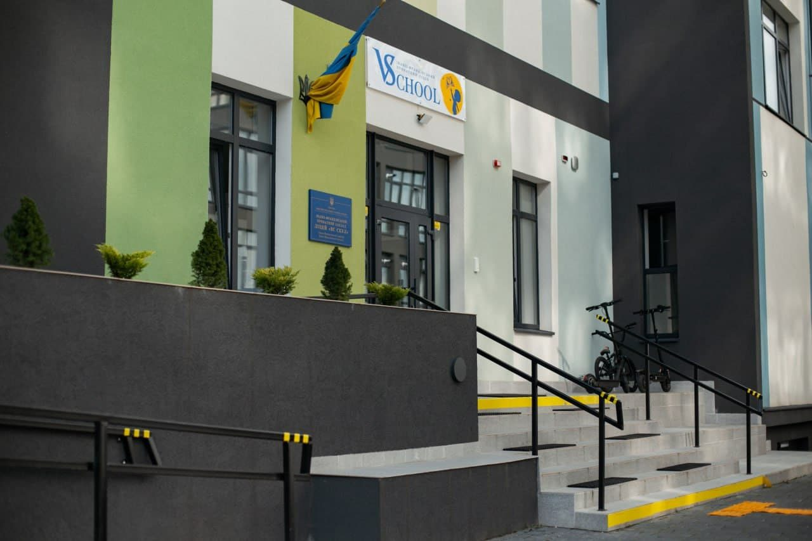

Документи
Прозорість та інформаційна відкритість закладу освіти: статут, ліцензія, освітні програми, звіти та правила.
- 1
- 2
Ліцензія на провадження освітньої діяльності
PDFВідкрити - 3
Структура та органи управління закладу освіти
PDFВідкрити - 4
Укомплектованість педагогічними кадрами ІФПЗЛ «ВС СКУЛ» відповідає ліцензійним умовам
PDFВідкрити - 5
Освітні програми, що реалізуються в закладі освіти, та перелік освітніх компонентів, що передбачені відповідною освітньою програмою
- 6
За ІФПЗЛ «ВС СКУЛ» територія обслуговування не закріплена, тому ми приймаємо на навчання дітей, не зважаючи на їх місце проживання
- 7
Ліцензований обсяг – 400 учнів. Станом на 01.11.2026 року фактична кількість осіб, які навчаються у закладі освіти – 385 здобувачів освіти
- 8
Мова освітнього процесу – українська (відповідно до ст.7 Закону України «Про освіту»)
PDFВідкрити - 9
Станом на 01.09.2026 року вакантних посад немає
- 10
Матеріально-технічне забезпечення закладу освіти (згідно з ліцензійними умовами)
ДетальнішеУ ліцеї функціонують 28 навчальних кабінетів, спортивна зала, комп’ютерний клас, актова зала, їдальня на 120 місць, спортивний та ігрові майданчики.
Для учнів обладнано місця для занять на свіжому повітрі у внутрішньому дворі та на даху ліцею. Укриття обладнане відповідно до методичних рекомендацій ДСНС. У навчальних кабінетах є інтернет, у ліцеї — Wi‑Fi.
- 15інтерактивних дощок
- 56ноутбуків
- 12телевізорів
- 26проєкторів
- 3ламінатори
- 11принтерів
- 11
Результати моніторингу якості освіти
- Наказ № 71-о/д від 31.10.2025 року Про проведення комплексного самооцінювання ефективності функціонування внутрішньої системи забезпечення якості освіти у 2025-2026 навчальному році за напрямом «Педагогічна діяльність педагогічних працівників закладу освіти»PDFВідкрити
- Аналітична довідка за напрямом 3: «Педагогічна діяльність педагогічних працівників закладу освіти»PDFВідкрити
- 12
- 13
Правила прийому до закладу освіти
Детальніше- Подача заявки. Заповніть заявку на сайті — адміністратор вам зателефонує.
- Зустріч з дитиною та батьками. Екскурсія ліцеєм з адміністрацією, співбесіда з дитиною.
- Пробний день. Дитина знайомиться з вчителями та класом. Це знижує стрес перед першим днем. Педагоги, практичний психолог спостерігають за дитиною, прослідковують рівень знань дитини.
- Підписання договору. Ви підписуєте договір зі школою та подаєте документи для вступу.
- 14
Умови доступності закладу освіти для навчання осіб з особливими освітніми потребами
ДетальнішеВідповідно до Ліцензійних умов провадження освітньої діяльності (постанова Кабінету Міністрів України від 30 грудня 2015 року № 1187) будівлі та приміщення ІФПЗЛ «ВС СКУЛ» забезпечені безперешкодним доступом для дітей з інвалідністю та інших маломобільних груп населення згідно з державними будівельними нормами України.
- 15
Розмір оплати за надання освітніх послуг у повному обсязі встановлюється в національній валюті по курсу долара США, встановленого Національним банком України на день здійснення оплати. Станом на 01.09.2026 року щомісячна вартість освітніх послуг становить 400 дол. США (чотириста доларів)
- 16
Перелік додаткових освітніх та інших послуг, їх вартість, порядок надання та оплати (всі послуги входять в оплату за навчання). Секції та студії на вибір учня
- 17
Правила поведінки здобувача освіти в закладі освіти
PDFВідкрити - 18
- 19
Створення комісії з розгляду випадків насильства та/або жорстокого поводження з дітьми та затвердження Положення про її роботу
PDFВідкрити - 20
Накази про дотримання мовного законодавства та мораторій на публічне використання російськомовного продукту в ІФПЗЛ «ВС СКУЛ»
- 21
Локальні положення ІФПЗЛ «ВС СКУЛ»
- Положення про академічну доброчесність ІФПЗЛ «ВС СКУЛ»PDFВідкрити
- Положення про систему оцінювання результатів навчання учнів ІФПЗЛ «ВС СКУЛ»PDFВідкрити
- Положення про використання систем штучного інтелекту (ШІ) та цифрових інструментівPDFВідкрити
- Правила доступу і перебування учасників освітнього процесу та інших осіб на території та в приміщеннях ІФПЗЛ «ВС СКУЛ»PDFВідкрити
- Порядок реагування на випадки булінгу (цькування) в ІФПЗЛ «ВС СКУЛ»PDFВідкрити